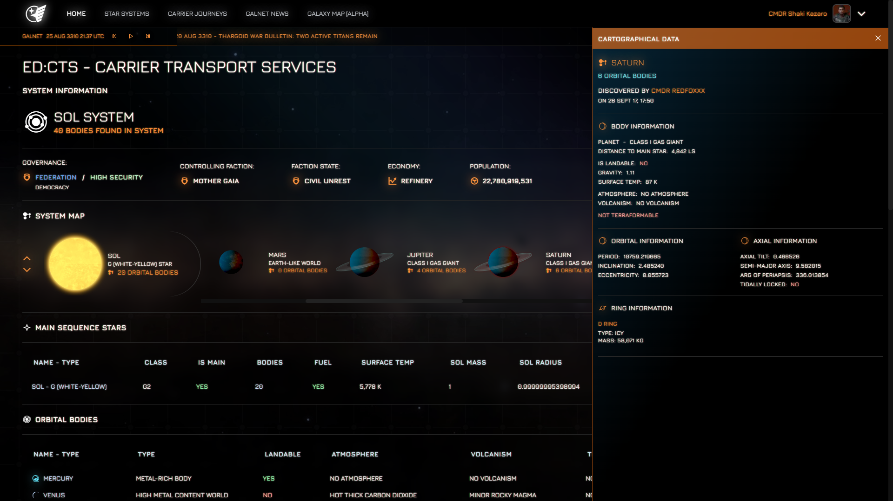
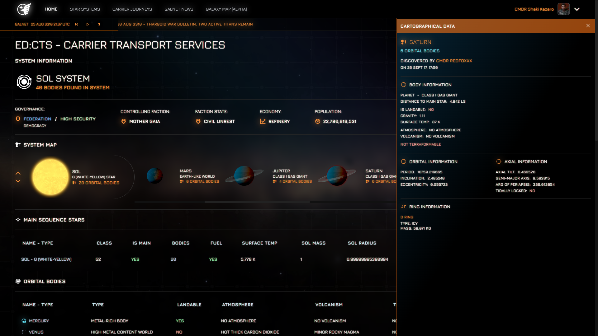

Versyx Digital
We build small, sharp tools.
Versyx Digital is an open source studio focused on practical, high-performance developer utilities. Clean design, predictable behavior, zero fuss.

Versyx Digital is an open source studio focused on practical, high-performance developer utilities. Clean design, predictable behavior, zero fuss.
Minimal UI, predictable behavior, and sensible defaults. Tools that disappear into your workflow.
Startup times measured in milliseconds and features geared toward instant feedback.
Thoughtful integrations, useful exports, and practical defaults—without plugins.
 
